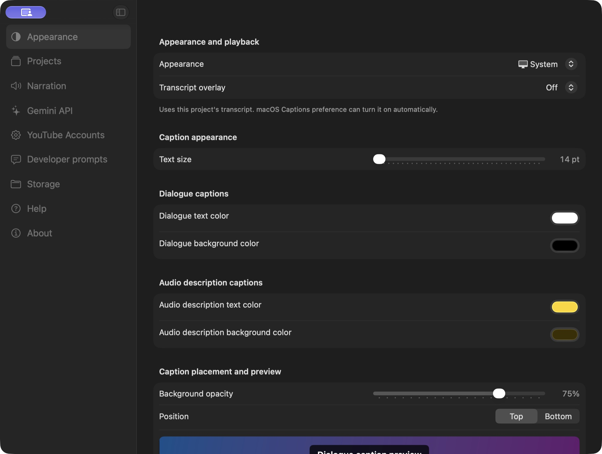
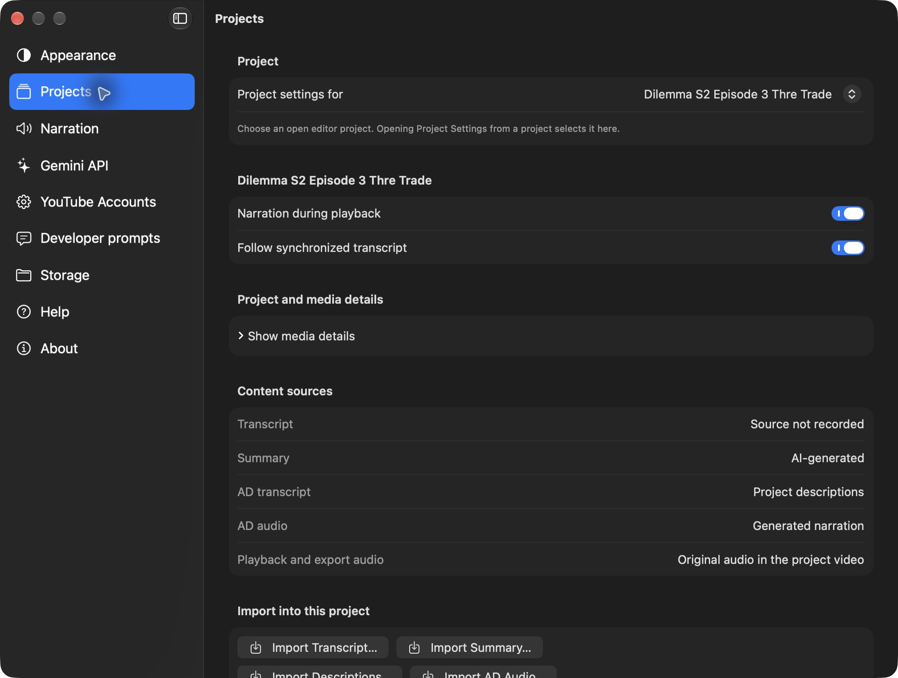

Open File > Settings (also VidiStudio > Settings on Mac) or press Command-Comma (Mac) / Ctrl-Comma (Windows). On both Mac and Windows, Settings apply and save automatically. Close the window using its normal close control (or Alt-F4 on Windows); there are no Save settings or Cancel footer buttons, and closing does not undo changes. Appearance and caption changes update open project windows. Windows saves text edits after a brief pause and flushes pending changes when you leave or close Settings. If saving fails, a short error keeps the changes pending for retry and prevents closing until they can be saved. Gemini API keys remain in the system credential store, outside settings JSON. Project changes, completed imports, account actions, and voice downloads or removals also apply immediately. Segment editing still uses Save Segment to commit its draft.

Appearance: System follows macOS appearance; Light and Dark select that appearance for VidiStudio.
Transcript overlay: Off hides VidiStudio's overlay, Transcript shows timed dialogue, and AD Transcript shows dialogue plus identified audio-description text. The choice applies to local and YouTube previews. In an editor, the toolbar and Playback menu expose these modes only on Transcript, Descriptions, and AD Transcript. On YouTube, the overlay remains separate from the site's own captions and transcript and does not take focus from its player shortcuts.
Caption appearance: Dialogue captions and audio-description captions have separate text and background color controls, making AD passages visibly distinct during playback. Shared text size, background opacity, and top/bottom position update the two-row preview immediately. They also update open project windows automatically on both desktops. These choices also style future open-caption video exports. Restore Caption Defaults resets only these appearance controls.
Developer mode: Off by default. Turning it on reveals Open Project Configuration in project menus and the inspector, Developer prompts in the Settings sidebar, the optional executable-path overrides in Narration (Windows SAPI host) and Storage (Python, FFmpeg, and FFprobe), and the legacy File Explorer context-menu repair action on Windows. Turning it off hides those controls while keeping saved prompt edits and paths.

Each open project is listed by name. Narration during playback enables or disables its descriptions in the player. Follow synchronized transcript automatically scrolls to active dialogue or descriptions. Both mirror the editor buttons and persist for that project on this Mac. Closing a project removes its visible entry; reopening restores its choices.
Local voice controls are shown for Apple Voices and Piper Voices. Selecting Gemini for generation does not change the voice used by live local preview. Voice settings affect new generation; existing narration keeps its recorded voice. On Windows, the built-in system engine choices are Windows OneCore and Windows SAPI 5 instead of Apple Voices; both desktops also offer Piper Voices with downloadable neural models, and Gemini voices work on both. Summary read-aloud uses the same engine and voice chosen for narration.
Bring Your Own Key (BYOK) System: VidiStudio operates on a BYOK architecture for automated AI features. You can create local video projects, import existing assets, and work with video files without an API key; YouTube project creation also works without a key; YouTube creation requires internet, independently of Gemini. To utilize automated AI features (speech transcription, video summaries, audio descriptions, description rewrites, frame text OCR, and Gemini narration), you supply your own Google Gemini API key from Google AI Studio. VidiStudio provides no shared server proxy, subscription fee, or cloud storage: your key connects directly from your device to Google's official Gemini API endpoints. Your key is stored securely on your device (in the macOS Keychain on Mac, service com.vidistudio.gemini-api, and Windows Credential Manager on Windows) and persists across app updates and reinstalls. When an API key is not entered, AI features across VidiStudio are disabled and display tooltips explaining that an API key is required. Open API Keys in Google AI Studio opens the key-management page. Check API Key & Plan checks that the key is valid, automatically detects whether your account is on the Free or Paid plan, and loads the list of compatible models available to your account.
Account Plan: When an API key is entered, VidiStudio automatically tests the API to determine whether the key is on the Free Plan or Paid Plan, displaying the detected plan status without requiring manual selection.
Under Local video, choose models for Speech transcription, Video summaries, Audio descriptions, On-screen text, Description rewrites, and Gemini narration. Under YouTube video, choose the YouTube video model, Imported audio transcription, and Audio descriptions with imported audio. The two imported-audio choices share the corresponding Local video settings: changing either location updates the same saved choice. Model availability depends on your account and service access; load compatible models with Check API Key & Plan.
When Audio Sources > Transcription source is YouTube video, transcription and Audio Description generation (including selected-range analysis) automatically use the YouTube video model. When it is Imported audio, transcription uses Imported audio transcription and descriptions use Audio descriptions with imported audio, matching local-file processing. Dedicated speech models use a compatible video-model fallback for transcript range editing, just as local videos do. Descriptions still analyze the YouTube picture and current transcript. Summary and other task models remain shared; playback and export audio choices do not select an analysis model. Changes apply to future requests and do not regenerate existing content.
API key check results: No API Key Entered means the field is empty or contains only spaces; no request is sent. Invalid API Key means Google explicitly rejected the entered key; replace it with a valid key from Google AI Studio. API Key Verified means the entered key was accepted and compatible models were loaded. A connection, service, quota, or permission failure shows API Key Check Incomplete instead of claiming the key is invalid. Previous verification, plan information, and model choices are kept for the same key. Editing the key resets its check result; results for a previous entry are ignored.
Open Settings > Gemini API > Advanced > Video processing on Mac or Windows. Choose Agentic (the default) for model-directed video analysis, or Static for fixed video sampling. This is a dropdown, not a text field. It applies to summaries and Audio Descriptions for local and YouTube videos, and to YouTube screen-text requests. Transcription and selected-range analysis use Static. Availability depends on the selected model and Gemini access. Checking the API key preserves your processing choice. Both desktops save the choice automatically. Older saved Standard settings are interpreted as Static. Existing generated content stays unchanged until you run generation again.
Use View Project Language near the top of the right inspector to choose Auto or a supported Gemini language for the project. Each content type has its own Saved Result picker. View Project Language switches the saved transcript, captions, summary, descriptions, timeline, and playback to that language together. Each section can keep an independent generation target; changing the viewing language preserves those targets and all saved results. A language without saved content shows an empty section. Settings > Gemini API > Default Language for New Projects sets the initial choice; existing projects start in Auto. Assign Language… changes the label of an existing result without translating its text or changing its audio.
Auto is a saved category. Auto transcription preserves all spoken languages, scripts, and language switches. Auto summaries and descriptions use the primary language detected from the original video, with English when none is identifiable. Choosing a specific language requests translated dialogue or generated prose in that language. Detected content stays in Auto until you explicitly assign another language. All Languages is a browsing filter, not a generation choice. Language availability follows the shared Gemini text-language catalog; narration voices must separately support the text.
Choose a specific language to translate dialogue or generate the summary or descriptions in that language. Choices follow Google’s documented Gemini text-language support; the Gemini model-list API does not supply a per-model language list. Both Chinese scripts are available separately. These are output choices, not hints that restrict which spoken languages Gemini recognizes.
With a dedicated speech-transcription model selected, a specific transcript output language uses the saved YouTube video model for both local videos and YouTube, including imported audio. Auto continues to use the configured transcription model and its automatic detection. Transcript range editing uses the compatible video-model fallback as before. Translated transcript text retains source speech timing and speaker identities. Description re-analysis and rewrites follow the Descriptions choice; Auto rewrites preserve the supplied description’s language. The explicit output-language choice takes precedence over original-language wording in Developer prompts.
Language choices save immediately and affect future generation and selected-range re-analysis. They apply to local videos and YouTube projects. Existing text, manually entered text, imported files, and imported YouTube captions stay as saved; choose the relevant Regenerate action to add a result in the target language and review alternatives before any replacement. Analyze Video keeps an imported YouTube caption transcript unless you explicitly regenerate it. Language choice does not change the interface, narration voice, or existing audio. Select a voice that supports the description language before generating narration. Export track titles and language metadata follow the explicitly selected result language; Auto uses undetermined language metadata.
Enable Developer mode under Appearance to show this section. Expand a processing stage to edit its System instruction and User prompt. These guide the corresponding model's behavior and requested output. Multilingual Media is shared automatically by transcript, summary, Audio Description, and screen-text requests for both local videos and YouTube. It tells video-understanding models to use every spoken and visible language, preserve code-switching, and keep original scripts for verbatim speech and visible text. With Auto transcript output, Gemini 3.5 Transcribe uses automatic language detection directly rather than a text prompt. A specific output language uses the compatible video model and takes precedence over original-language instructions. Gemini 3.8 TTS reads each saved description verbatim, so the older TTS user prompt does not apply to those two models. Summary and Audio Descriptions include exceptions for dialogue-free films, silent videos, and music videos, and request only finished output. For YouTube projects, Summary also uses a nonempty saved video description as secondary context, with the video taking precedence. Summary begins with a story title and then the story itself; transcript checks, suspected ASR hallucinations, and reasoning stay out of the summary. On upgrade, prompt fields that exactly match the previous built-in defaults advance automatically; customized fields are preserved independently. These are advanced settings: keep a copy before changing them, preserve expected output requirements and placeholders, and validate changes on a small project. Updates affect subsequent requests, not already generated results.
About reports the app version and the bundled FFmpeg version and license. The Piper voices section identifies the bundled Piper speech engine and its license, and opens the full license text, the g2pW notice, and the Piper source code. Piper voice models are downloaded on demand and keep the license and terms published with each voice. The third-party notices section opens the complete license index or the bundled license folder.
Open VidiStudio Help opens this guide. App version identifies the installed build. Keyboard shortcut reference provides the complete current command list, including segment Edit, Add, selection, bulk edit and deletion shortcuts, the Summary Play or Resume, Pause, and Stop shortcuts, and the summary Markdown editor shortcuts. Commands that depend on a particular section or selection remain listed and become available when that context is active.
Removing a saved Gemini API key or a downloaded Piper voice works offline. Online controls show the connection requirement in their help text as well as the connection banner. Cached voice samples remain playable without internet.
Add, select, sign out, or disconnect Google accounts for uploaded videos, playlists, and caption imports. Google profile and channel details are shown separately. See Browse your YouTube videos and playlists.
Select a project in All Projects or activate its editor, then choose File > Open Project Settings, directly below Settings, or right-click the editor workspace or a project entry and choose Open Project Settings. Settings opens directly to Projects for the chosen project’s narration and synchronized-transcript preferences. Project list/grid context menus also offer this action. It targets the clicked project without switching the editor to another project. This is separate from the developer-only Open Project Configuration command.
Settings has one shared window. In Projects, use Project settings for to choose between open editor projects. Two windows editing the same project share one choice in this list. Opening Open Project Settings from an editor selects that project directly. Opening or closing editors updates the choices.
Projects now includes project/media details, transcript and summary provenance, AD transcript/audio sources, original audio information, import actions, Export, Open in Editor, Open Project Folder and Rename. Local videos show their original video audio source and the same text/AD import and export actions. YouTube projects additionally offer independent export, playback and transcription source selectors, original-audio import/removal/timing review, YouTube details, caption import and Open in YouTube. Changing a future transcription source does not replace an existing transcript; its recorded source remains visible.
Project source choices and completed imports are saved immediately in the selected project. Imports retain timing validation, replacement confirmation and undo. On Mac their dialogs open over Settings; on Windows import/export actions activate or open the selected project's editor and return to Settings afterward. Other editor windows keep their own projects. Narration engine and voice choices remain in the Narration tab and apply through the existing shared app settings.
The YouTube editor's bottom bar uses an Audio Sources icon and a playback-source icon. Hover for the full action/source name, or use their screen-reader labels. Full source names and controls remain in the inspector, source dialog and Projects settings.
Projects settings uses separate full-width sections for project/media details, content sources, audio sources, imports and project actions. Labels and long values wrap within the content area; scroll the page to reach later sections.
With a project selected in All Projects or a project editor active, choose File > Open Project Settings… or press Command-Shift-Comma (Mac) / Ctrl-Shift-Comma (Windows). The shared Settings window opens directly to Projects and selects the chosen project. Both Settings shortcuts are displayed beside their File menu items. Project Settings requires a usable selected project.
Edit mode: Select the tab you want to work on, then choose Edit (or Enter Edit Mode in the Mac inspector). Language and Saved Results shows transcript controls on Transcript, summary controls on Summary, and description/narration controls on Descriptions. AD Overview shows description/narration results; AD Transcript shows its transcript and description sources. Only View Project Language is a shared project setting. View Project Language and saved-result selection are available in view mode. Changing section generation targets, using Keep All Sections in Sync, and assigning a language label require Edit mode. Save or cancel pending summary edits before changing languages or saved results. Choosing a target does not translate existing content; generate a result to create text in that language.
Transcript Generation Language, Summary Generation Language, and Descriptions and Narration Generation Language each have their own target-language picker in Language and Saved Results. Choose a specific language or Auto independently for each section. For example, a Hindi video can have an English transcript, a Hindi summary, and Marathi descriptions. Follow Project Language is optional for each section; those generation targets follow View Project Language for future requests, while explicit targets stay independent. Viewing always uses View Project Language across sections. Keep All Sections in Sync returns every section to Follow Project Language without deleting saved results. AD Transcript uses the chosen transcript and description results; narration stays attached to its description version.
In view mode, View Project Language lists every language with a stored result, including review drafts and incomplete or empty results. Each language names its available sections in the menu, such as English (Transcript, Summary). Auto appears when it has a stored result. If the selected language has no stored results, the picker shows No saved content selected; choose an available language, or enter Edit mode to prepare a new language.
In Edit mode the picker becomes Edit Project Language and includes Auto and every supported Gemini language. Choosing a new language does not translate existing content. Section Generation Language controls can follow the project language or use independent targets. Generate or import results to populate the chosen language. Saved Result selects an existing version; Assign Language relabels content without rewriting it. Pending alternatives appear in Saved Results with a Review draft label and remain available through Review until selected or reviewed.
Settings → Projects → Project settings for selects the project whose language controls, saved results, and sources are shown. The Language and Saved Results section has the same global viewing/editing picker and controls for Transcript, Summary, Descriptions and Narration, and Imported AD Audio. Choose Edit Languages to change generation targets or assign labels, then Finish Editing Languages. Viewing and saved-result switching work without Edit mode. Changes save immediately to that project and update its editor, captions, timeline, and narration together. Other projects keep their selections. Save or cancel pending summary edits before switching context; active operations or segment-edit dialogs can temporarily disable changes.
Settings, inspectors, and application dialogs use concise labels and actions. Workflow explanations are provided in this Help and on the website. Export and deletion still retain the required file lists, affected counts, validation messages, and confirmation actions.